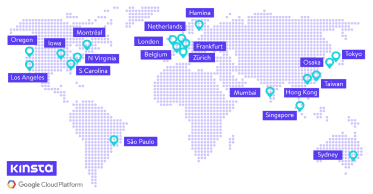

À quoi
ressemblera
le monde ?
Lieu : Centre de donnée Google
Qu’est-ce qu’un centre de donnée ?
C’est un lieu comportant de nombreux ordinateurs et serveurs qui stockent et traitent de grandes quantités d'informations, ils servent à maintenir l’activité d’internet 24 heure sur 24 et 7 jours sur 7.
Qui utilise ces serveurs Google ?
Google est une entreprise qui est impliquée dans plusieurs domaines :
- Moteur de recherche (Google)
- GPS (Maps, Waze)
- Site d’hébergement de vidéo (YouTube)
- Mail (Gmail)
- …
Premier serveur
Le premier serveur utilisé par Google a été créé par Larry Page et Sergey Brin en 1996. À leur époque, les disques durs avaient une capacité maximum de 4 Go, ils en ont donc empilé 10 dans une structure à base de Lego.

Combien et où ?
Il y a actuellement 23 centre de donnée Google ouverte partout dans le monde, il y a actuellement 14 plateformes en Amérique du Nord, 1 en Amérique du Sud, 6 en Europe, et 2 en Asie.
Problème de pollution
Avec plus de 6,9 milliards de requêtes par jour, Google est donc le site internet le plus visité du monde, il est donc le site internet le plus pollueur du monde avec empreinte carbone de 40% de l’ensemble d’internet.
Engagement de Google
Vu l’ampleur que prend la cause écologique de nos jours, Google promet de prendre des engagements afin d’être le plus « vert » possible d'ici à 2030.
Engagement carbone
Google est la première grande entreprise à prendre l’engagement de faire fonctionner leur plateforme 24 heure sur 24 et 7 jours sur 7 sans émettre de carbone d'ici à 2030.
Engagement gestion eau
Google utilise de l’eau pour refroidir leur centre de données, ils utilisent généralement de l’eau provenant des bassins versants locaux. Google a pris pour engagement d’améliorer la santé des bassins versants en situation de stress hydrique en restituant 120% de l’eau qu’ils consomment.
Engagement réalisé
L’entreprise a déjà réalisé des engagements qu’elle avait pris par le passé comme le fait qu’elle est la première société internet a déjà réussi à être neutres en carbone depuis 2007.